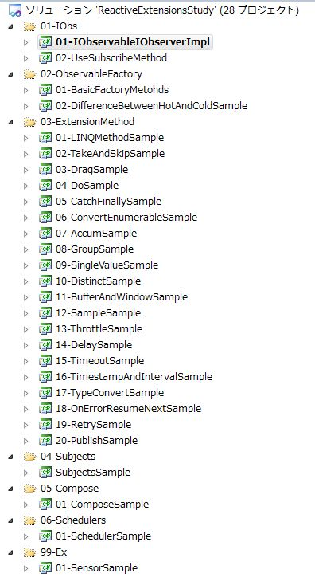

概要
このサンプルプログラムは、かずきのBlog@hatenaに掲載したReactive Extensions再入門で使用したコード片をあつめたものになります。Blog内のプログラムを実際に動作させて試すことが出来ます。
サンプルプログラムの構造
サンプルプログラムは、ソリューションフォルダとプロジェクトで分類されています。ソリューションを開くと下記のようなソリューションエクスプローラが表示されます。

プロジェクト内の簡単な説明を以下に示します。
01-IObsソリューションフォルダ
- 01-IObservableIObserverImpl
IObserverインターフェースとIObservableインターフェースの実装例のプログラムです。基本インターフェースの中身を理解するために使用しますが実用性はありません。
- 02-UseSubscribeMethod
SubjectクラスとSubscribeメソッドを使ったサンプルプログラムです。今後のサンプルプログラムで多用するメソッドとクラスの基本的な動作を確認します。
02-ObservableFactoryソリューションフォルダ
- 01-BasicFactoryMethods
Observableクラスに定義されている様々なIObservable<T>のインスタンスを作成するためのメソッド群のサンプルプログラムが含まれています。
- 02-DifferenceBetweenHotAndColdSample
Reactive Extensionsの重要な概念の１つであるHotなObservableとColdなObservableの動作の違いを確認するためのサンプルプログラムが含まれています。
03-ExtensionMethodソリューションフォルダ
- 01-LINQMethodSample
Reactive Extensionsで使えるSelectやWhereなどの基本的なLINQのメソッドについてのサンプルプログラムです。 - 02-TakeAndSkipSample
Take***メソッドやSkip***系のメソッドのサンプルプログラムです。 - 03-DragSample
TakeとSkipを組み合わせてドラッグ処理を実現するサンプルプログラムです。 - 04-DoSample
副作用を実行するためのDoメソッドのサンプルプログラムです。 - 05-CatchFinallySample
例外処理を行うためのCatchメソッドやFinallyメソッドについてのサンプルプログラムです。 - 06-ConvertEnumerableSample
IObservable<T>からIEnumerable<T>へ変換するタイプのメソッドのサンプルプログラムです。 - 07-AccumSample
集計を行うメソッドのサンプルプログラムでうｓ。 - 08-GroupSample
グルーピングを行うメソッドのサンプルプログラムです。 - 09-SingleValueSample
IObservable<T>のシーケンスから単一の値を取りだすためのメソッドのサンプルプログラムです。 - 10-DistinctSample
重複の排除を行うDistict系メソッドのサンプルプログラムです。 - 11-BufferAndWindowSample
値をまとめるBufferメソッドとWindowメソッドのサンプルプログラムです。 - 12-SampleSample
名前がややこしいですが、一定時間内で発行された最後の値のみとおすSampleメソッドのサンプルプログラムです。 - 13-ThrottleSample
短い間隔で連続して発行される値をフィルだリングするThrottleメソッドのサンプルプログラムです。 - 14-DelaySample
遅延させるDelayメソッドのサンプルプログラムです。 - 15-TimeoutSample
タイムアウトのサンプルプログラムです。 - 16-TypeConvertSample
IObservable<object>からIObservable<T>への型変換を行うサンプルプログラムです。 - 18-OnErrorResumeNextSample
エラー時の振る舞いを変更するメソッドのサンプルプログラムです。 - 19-RetrySample
エラー時にリトライするサンプルプログラムです。 - 20-PublishSample
ColdなObservableからHotなObservableへ変換するメソッドのサンプルです。
04-Subjectsソリューションフォルダ
- SubjectSample
Subject, RetrySubject, AsyncSubjectなどの各種Subjectクラスのサンプルプログラムです。
05-Composeソリューションフォルダ
- 01-ComposeSample
複数のIObservable<T>のシーケンスを合成するメソッドのサンプルプログラムです。
06-Schedulersソリューションフォルダ
- 01-SchedulerSample
IObservable<T>のシーケンスの実行場所や時間を制御するSchedulerのサンプルプログラムです。
99-Exソリューションフォルダ
- 01-SensorSample
センサーに見立てた疑似的なクラスを使って複数のReactive Extensionsのメソッドを組み合わせたサンプルプログラムです。